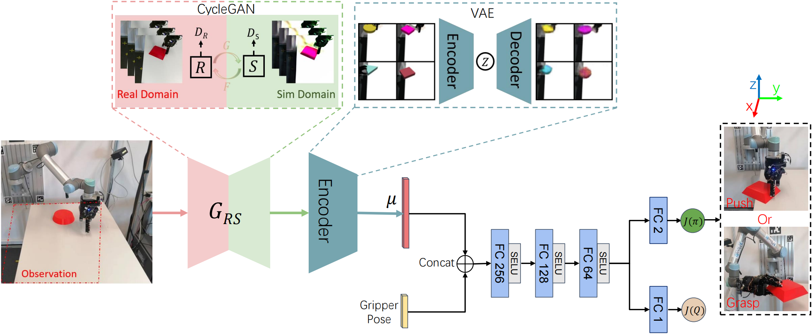

Reinforcement Learning Based Pushing and Grasping
Objects from Ungraspable Poses
Grasping an object when it is in an ungraspable pose is a challenging task, such as books or other large flat objects placed horizontally on a table. Inspired by human manipulation, we address this problem by pushing the object to the edge of the table and then grasping it from the hanging part. In this paper, we develop a model-free Deep Reinforcement Learning framework to synergize pushing and grasping actions. We first pre-train a Variational Autoencoder to extract high dimensional features of input scenario images. One Proximal Policy Optimization algorithm with the common reward and sharing layers of Actor-Critic is employed to learn both pushing and grasping actions with high data efficiency. Experiments show that our one network policy can converge 2.5 times faster than the policy using two parallel networks. Moreover, the experiments on unseen objects show that our policy can generalize to the challenging case of objects with curved surfaces and off-center irregularly shaped objects. Lastly, our policy can be transferred to a real robot without fine-tuning by using CycleGAN for domain adaption and outperforms the push-to-wall baseline.

We pre-train a VAE for feature extraction and a CycleGAN for domain adaption. We train our policy in Isaac Gym simulator, and the pre-trained encoder obtains a latent vector concatenated with the gripper pose as a state embedded into the policy network (shared layers of Actor-Critic) to determine the following action (144 steps for push and 84 steps for grasp). For the real robot experiment, the pre-trained CycleGAN transfers the images from the real domain to the simulation domain, effectively tricking the policy to believe that it is still in the simulator.
@article{park2021nerfies,
author = {Zhang, Hao and Liang, Hongzhuo and Cong, Lin and Lyu, Jianzhi and Zeng, Long and Feng, Pingfa and Zhang, Jianwei},
title = {Reinforcement Learning Based Pushing and Grasping Objects from Ungraspable Poses},
journal = {ICRA},
year = {2023},
}